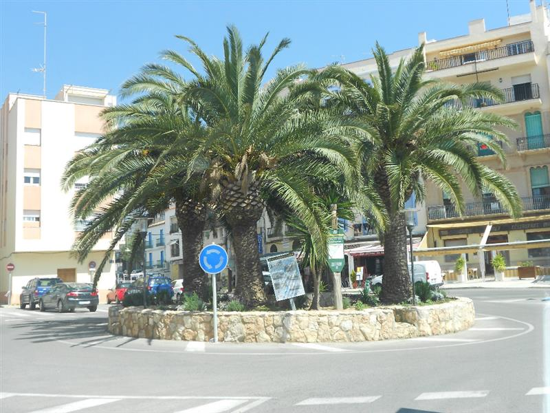

La Plaça del Canó es una plaza histórica del centro de L’Ametlla de Mar. Su nombre proviene de un cañón antiguo que se colocó allí y que recuerda el pasado marinero y defensivo del pueblo. En el pasado, las poblaciones de la costa tenían cañones para defenderse de ataques de piratas o enemigos que llegaban por mar. Con el tiempo, el cañón se convirtió en un símbolo del pueblo y dio nombre a la plaza. Hoy en día la plaza es un lugar emblemático del casco antiguo, donde la gente se reúne y que forma parte de la historia y la identidad de L’Ametlla de Mar.
